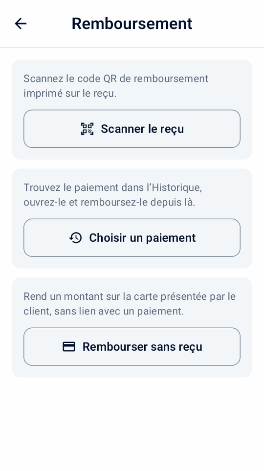
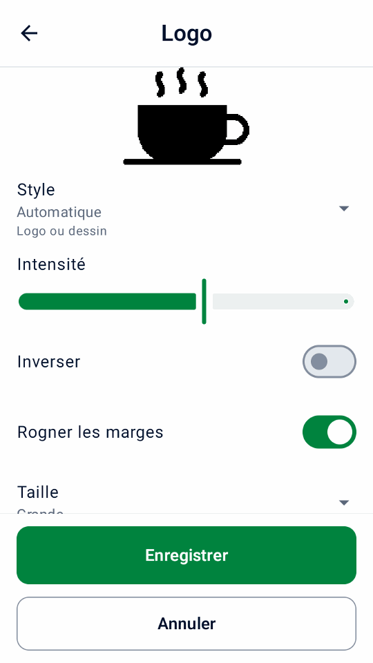
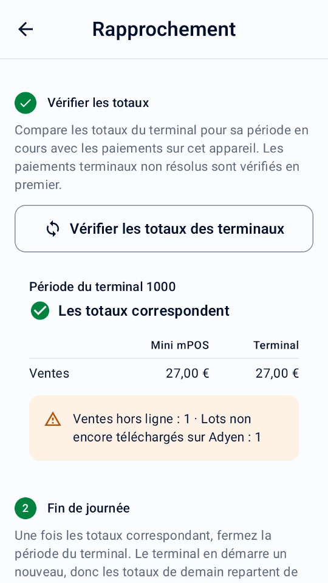

Guide
Utilisation de Mini mPOS
Préparez votre activité, encaissez, remettez les reçus et clôturez la journée. Ajoutez les options de paiement selon vos besoins.
Préparer l’activité
Préparer les produits, les taxes et les accès du personnel
Terminez la configuration de la connexion avant d’accepter des paiements réels.
Définir la devise et la taxe
- Dans Paramètres › Paiements, choisissez une Devise que votre compte marchand accepte pour les paiements en personne.
- Dans Paramètres › Taxe, vérifiez les taux, si les prix incluent la taxe ou si la taxe est ajoutée à la caisse, ainsi que le taux par défaut pour les nouveaux produits.
Après la configuration, Paramètres › Paiements peut proposer la devise de règlement principale du compte marchand indiquée par Adyen. Cette suggestion ne confirme pas que le compte accepte les paiements dans cette devise. La choisir ouvre la même vérification des prix ; conserver la devise actuelle ne change rien.
Chaque produit a un taux de taxe ; utilisez un taux de 0 % pour les articles non taxés. Désactiver Facturer la taxe arrête le calcul des taxes, mais conserve les taux.
Important
Changer la devise conserve les chiffres dans vos prix ; il ne les convertit pas à un taux de change. Vérifiez ensuite les prix de vos produits.
Ajouter des produits
- Ouvrez Paramètres › Produits et appuyez sur +.
- Entrez un nom, un prix et un taux de taxe. Ajoutez éventuellement une catégorie et un code-barres, saisis ou numérisés.
- Pour un dépôt, activez Produit de préautorisation afin qu'il n'apparaisse que dans les pré-autorisations.
Configurer les PIN du personnel
Dans Paramètres › Sécurité, touchez Définir le PIN pour protéger les Paramètres et les Produits par un PIN administrateur, et choisissez quand l’accès se verrouille de nouveau. Touchez Définir le PIN responsable pour les actions protégées ; le PIN administrateur ne peut pas les approuver. Utilisez ensuite Modifier le PIN administrateur ou Supprimer le PIN administrateur.
Sous Autorisations du responsable, choisissez les actions qui exigent le PIN responsable. Les actions similaires partagent un interrupteur ; les remboursements référencés, sans reçu et en espèces ont chacun le leur. L’approbation du responsable dans ces guides suit ces choix.
Sans PIN administrateur, toutes les actions sont ouvertes. Dès qu’il existe, les actions protégées restent bloquées jusqu’à la définition d’un PIN responsable. Supprimer le PIN administrateur supprime aussi le PIN responsable ; les choix d’autorisations sont conservés. Plusieurs PIN erronés bloquent la saisie un moment.
Servir les clients
Accepter un paiement par carte
- Sur Accueil, appuyez sur Nouvelle vente. Appuyez sur les produits, appuyez sur Scanner le code-barres, ou ajoutez un Article personnalisé.
- Appuyez sur Débiter. Vérifiez les articles, les taxes et le total, et remplissez les champs de référence ou de courrier électronique.
- Appuyez sur Payer. Le terminal, ou l'application Adyen Payments avec Tap to Pay, demande au client de payer.
- Attendez le résultat. Ne commencez pas un autre paiement jusqu'à ce qu'il apparaisse.
- Remettez au client un reçu avec Imprimer le reçu, Envoyer le reçu par e-mail ou Partager le reçu, sauf s'il a été livré automatiquement.
Remarque
Selon le terminal et votre compte marchand, les clients insèrent ou approchent une carte, ou approchent un téléphone ou une montre. Avec Tap to Pay, l’application Adyen Payments les guide.
Avertissement
Résultat inconnu ne signifie pas que le paiement a échoué. Vérifiez le paiement initial avant de débiter à nouveau.
Les références client et l’enregistrement des cartes sont facultatifs ; voir références et cartes enregistrées. Pour partager l’addition ou accepter des espèces, des cartes cadeaux ou des titres-restaurant, voir les parcours d’encaissement facultatifs. Pour que les clients paient sur leur propre téléphone, utilisez un lien de paiement. Si un paiement est refusé, voir paiements refusés.
Rembourser ou annuler un paiement
- Rembourser
- Pour un paiement facturé. Renvoie tout ou partie de l'argent.
- Annuler (annuler)
- Pour un paiement retenu qui n'a pas été capturé : appuyez sur Annuler la préautorisation pour un dépôt, ou Annuler le paiement pour une vente En attente de pourboire. Cela libère la prise.
Pour rembourser :
- Sur Accueil, appuyez sur Remboursement, puis Scanner le reçu pour scanner le code QR de remboursement, ou Choisir un paiement pour ouvrir la vente d’origine dans Historique.
- Choisissez un remboursement complet, un montant ou des articles individuels. Les remboursements d'articles nécessitent la vente originale sur cet appareil.
- Confirmez le remboursement et entrez le PIN responsable si demandé.


Ces remboursements sont liés à leur paiement d’origine. Remboursez les liens de paiement payés dans le Customer Area.
Une vente partagée est remboursée sur ses paiements d’origine. Mini mPOS propose le montant à rendre sur chaque carte et les espèces à rendre ; touchez un paiement pour l’ajuster. Les cartes sont remboursées d’abord, une à une, puis les espèces, qui exigent un PIN responsable. Si un remboursement par carte n’est pas accepté, rien d’autre n’est rendu ; ouvrez la vente pour voir ce qui reste.
Une vente avec un supplément indiqué rend d’abord les montants d’achat, puis le pourboire, puis le supplément ; un remboursement total inclut le supplément restant.
Remboursement sans reçu
Utilisez Rembourser sans reçu uniquement lorsqu’il n’y a aucun paiement à rembourser, par exemple un retour sans reçu. Le montant est rendu sur la carte présentée par l’acheteur, sans lien avec un paiement : Mini mPOS ne peut donc pas vérifier ce qui a été payé. Vous êtes responsable des remboursements erronés ou répétés.
Demandez à Adyen d’activer les remboursements non référencés pour le magasin et définissez la limite de remboursement d’Adyen dans le Customer Area. Ensuite, dans Paramètres › Paiements, activez Autoriser les remboursements sans reçu, définissez votre propre Limite de remboursement et un PIN responsable. Adyen n’autorise pas ces remboursements dans certains pays ni pour les portefeuilles à QR code ; Mini mPOS vérifie le magasin qu’Adyen a vérifié pour le terminal.
Touchez Rembourser sans reçu, saisissez le montant, choisissez un motif, confirmez et approuvez avec le PIN responsable ; l’acheteur présente ensuite sa carte. Remboursement approuvé signifie que l’acquéreur l’a approuvé immédiatement ; Remboursement demandé signifie qu’Adyen a reçu la demande. L’historique, les reçus et le rapport quotidien présentent ces remboursements séparément ; rapprochez-les manuellement.
Si le support Adyen a configuré un délai de remboursement, activez Délai de remboursement configuré. Pendant ce délai, ouvrez le remboursement et touchez Annuler le remboursement, puis vérifiez dans le Customer Area s’il a été arrêté.
Adyen: Unreferenced refunds · Adyen: Cancel an unreferenced refund
Important
Remboursement demandé Cela signifie qu'Adyen a reçu la demande, et non que le client a l'argent. Vérifiez le résultat final dans le Customer Area. Si le résultat d'un remboursement est inconnu, vérifie-le avant de réessayer.
Imprimez, envoyez par courrier électronique ou partagez les reçus
À partir d'un résultat de paiement ou d'une entrée de l'historique, appuyez sur Imprimer le reçu ou Envoyer le reçu par e-mail. Les tablettes et les téléphones offrent également Partager le reçu, qui envoie une image via le menu de partage de Android. L'impression nécessite un terminal avec une imprimante.
Personnaliser et tester les reçus
- Dans Paramètres › Reçus, entrez les détails de votre entreprise, l'en-tête et le pied de page. Ou appuyez sur Importer les détails de l’entreprise depuis Adyen pour vérifier les données d’Adyen. Choisissez Compléter les données manquantes pour conserver le texte existant, ou Remplacer les données existantes pour utiliser le nom, l’adresse et le téléphone fournis. Les champs importés vides, l’identifiant fiscal, le titre et le pied de page restent inchangés.
- Choisissez Imprimer automatiquement, quand imprimer un Exemplaire commerçant, et s'il faut Afficher le code de remboursement QR.
- Appuyez sur Imprimer le reçu du test et vérifiez l'impression. L'aperçu à l'écran n'affiche pas la disposition exacte de l'imprimante.
Autres options :
- Afficher les montants des taxes
- Affiche la taxe incluse ou ajoutée au total. Cela ne change pas la taxe facturée.
- Afficher la répartition des taxes
- Répertorie la taxe pour chaque taux. Il est nécessaire d'indiquer la taxe incluse lorsque les prix incluent la taxe.
- Afficher les totaux imposables par taux
- Regroupe les totaux des articles par taux de taxe, y compris 0 %.
- Afficher les références
- Activé par défaut. Imprime la référence commerçant et toute référence client, afin qu'un reçu puisse être rapproché de son paiement.
- Taux d'imposition marqué (%)
- Marque les éléments à ce taux avec un Marqueur d’article et son explication. Laissez-le vide sans marqueur.
- Caractères par ligne
- 32 par défaut, pour les rouleaux de reçus étroits. Choisissez la largeur de votre imprimante avec un test d'impression.
Dans Paramètres › Reçus › Logo, choisissez une image PNG, JPEG ou WebP. Si l’appareil n’a pas de sélecteur de fichiers, envoyez-en une depuis l’aide à la configuration, seule ou avec d’autres réglages. Vérifiez l’aperçu en noir et blanc : Style choisit Auto, Logo ou Photo, et Intensité, Inverser et Rogner les marges l’affinent. Choisissez une Taille grande ou petite, puis enregistrez. Désactivez Imprimer le nom du commerce si le logo l’inclut déjà.
Le logo apparaît sur les reçus imprimés, envoyés par e-mail et partagés, y compris les réimpressions. Pour l’ajuster, choisissez de nouveau l’image d’origine ; utilisez Supprimer le logo pour l’effacer.


Définir la langue
L’application est disponible en anglais, chinois simplifié, chinois traditionnel, japonais, portugais du Brésil, espagnol et français. Paramètres › Langue change immédiatement le texte de l’application et les libellés des reçus sur cet appareil ; le texte enregistré du commerce et les noms de produits ne changent pas. Suivre l’appareil utilise la langue d’Android pour l’application. Les lignes de carte d’Adyen suivent la langue des reçus du terminal.
Configurer les reçus par e-mail
Accès sortant à votre serveur SMTP, généralement TCP 587 (STARTTLS) ou 465 (SSL/TLS).
- Ouvrez Paramètres › Reçus par e-mail. Choisissez votre fournisseur ou entrez le serveur SMTP, le port, l'expéditeur et la connexion. Utilisez STARTTLS ou SSL/TLS.
- Envoyez un e-mail de test.
- Sur le même écran, choisissez quand demander l'e-mail du client et si vous souhaitez envoyer automatiquement les reçus.
Suivez les instructions de votre fournisseur pour autoriser SMTP et obtenir le bon mot de passe :
Si les reçus ne s'impriment pas ou ne sont pas envoyés, voir problèmes d'imprimante et de messagerie.
Clôturer la journée
Trouvez des paiements et clôturez la journée
Historique répertorie les paiements et les remboursements par jour, avec les totaux quotidiens.
Chaque page affiche jusqu’à 100 entrées sur sept jours ; utilisez Précédent et Suivant pour naviguer. La recherche couvre toutes les transactions conservées.
- Filtrer par ventes, En attente de pourboire, préautorisations, remboursements ou A besoin d’attention, et utiliser Mode de paiement pour une marque de carte ou un portefeuille.
- Recherchez par référence, code d'autorisation, référence client ou email, les quatre derniers chiffres
de la carte, la marque, le portefeuille ou le montant exact. Chaque mot doit correspondre :
visa 34trouve des paiements Visa de 34.
Les totaux à l'écran suivent votre recherche et vos filtres. Les paiements retenus, tels que les dépôts et les pourboires sur le reçu, comptent comme des ventes le jour où leur capture est acceptée.
Clôturer la journée
- Ouvrez Historique, filtrer par A besoin d’attention et résoudre chaque entrée ; voir résultats inconnus.
- Vérifiez le En attente de pourboire et filtres de préautorisation. Saisissez les pourboires et capturez ou annulez les dépôts avant l'expiration de leurs retenues.
- Appuyez sur l'icône d'impression à côté du jour pour imprimer le Résumé quotidien local .
- Réconcilier avec les rapports d'Adyen dans le Customer Area ; voir le Guide de réconciliation des règlements Adyen.
Le récapitulatif couvre toute la journée, en ignorant les filtres : ventes, pourboires inclus, remboursements acceptés, net, nouvelles retenues et opérations non résolues, pour chaque devise. TEST et l’activité du simulateur sont étiquetés. Les liens de paiement payants et les captures sans date connue sont répertoriés séparément comme activité non datée.
Important
Le résumé quotidien local couvre uniquement les paiements conservés sur cet appareil. Il ne s'agit pas du règlement d'Adyen et n'inclut pas d'autres appareils. Le Customer Area fait autorité.
Avertissement
Le basculement entre LIVE, TEST et le simulateur supprime définitivement tout l'historique des paiements et les données de rapport sur cet appareil. S'il existe des paiements inachevés, l'application avertit à nouveau : rien n'est annulé chez Adyen, mais les données de récupération locale et de nouvelle tentative sécurisée sont perdues. Les produits et les paramètres restent.
Comparez avec les totaux du terminal et clôturez une période
- Sur Accueil, appuyez sur Rapprochement, alors Vérifier les totaux des terminaux. Mini mPOS vérifie d'abord les paiements de terminal en attente ou inconnus, puis affiche côte à côte les ventes et les remboursements de Mini mPOS et du terminal.
- Si Les totaux diffèrent, résolvez les paiements qui nécessitent une attention particulière dans l'historique et vérifiez à nouveau. La période terminale n'est pas nécessairement un jour calendaire ; d'autres appareils utilisant le terminal ou un historique local manquant peuvent entraîner des différences. Les liens de paiement, les débits de jetons et l'historique des échantillons ne sont pas des paiements terminaux.
- À la fin de la journée, appuyez sur Clôturer la période du terminal, confirmez et complétez l'approbation du responsable si demandé. Le terminal termine sa période et en commence une nouvelle ; cela ne peut pas être annulé.
- Vous pouvez éventuellement appuyer sur Imprimer le rapport du jour pour le Résumé quotidien local.
Non disponible avec Tap to Pay. Une comparaison concordante ou une période clôturée ne confirme ni le règlement, ni l’aboutissement des remboursements, ni le téléversement hors ligne ; le Customer Area fait foi.


Gérer les appareils et les données
Configurer plus d'appareils et gérer les données
- Sur l'appareil configuré, ouvrez Paramètres › Données et transfert › Partager avec un autre appareil. Choisissez le catalogue, les paramètres et/ou les mots de passe et les clés, puis appuyez sur Afficher les codes QR.
- Sur le nouvel appareil, choisissez Configurer à partir d’un autre appareil et scannez tous les codes, dans n'importe quel ordre. Choisissez de fusionner ou de remplacer son catalogue.
- Saisissez le code de transfert à 12 caractères affiché sur le premier appareil, même lors de la copie uniquement de produits ou de paramètres. Gardez-le séparé des codes QR. Appuyez sur Importer.
- Vérifiez les prix et les taxes, testez la connexion dans Paramètres › Terminalet imprimez un reçu de test.
Le nouvel appareil conserve sa propre destination de paiement, son terminal, son environnement et son enregistrement Tap to Pay. Une clé partagée ne fonctionne pour un autre terminal que si Adyen lui attribue la même clé.
Important
Il s'agit d'une copie unique, et non d'une synchronisation ou d'une sauvegarde de l'historique des paiements. Chaque appareil conserve ses propres paiements. La suppression des données de l'application dans Android supprime tous les produits, paramètres et historiques de l'appareil.
Dans Paramètres › Données et transfert, définir Conservez les transactions pour ou appuyez sur Effacer l’historique réglé; les paiements non résolus sont toujours conservés.
Sur une tablette ou un téléphone, Mini mPOS recherche une version plus récente au démarrage. Si Accueil propose Mettre à jour, appuyez dessus pour ouvrir l’APK dans votre navigateur, puis installez le téléchargement. Les terminaux Adyen se mettent à jour via le Customer Area, pas cette invite. Vous pouvez également obtenir le dernière version et suivez le étapes d'installation. Conservez la même source de signature et installez-la sur l'application existante ; ne désinstallez pas et n’effacez pas ses données.
Pour les problèmes d'importation, voir PIN et problèmes de transfert.
Options de paiement
- Vérifier et configurer les fonctionnalités d'Adyen
- Utilisez des workflows de paiement facultatifs
- Reconnaître les paiements hors ligne et les lots en attente
- Scanner le code d'un portefeuille d'acheteur
- Cartes enregistrées (Tokens)
- Vendre et gérer des cartes cadeaux
- Accepter le paiement avec un lien
- Conserver et récupérer un dépôt
- Récupérez un pourboire sur le terminal
- Récupérez un pourboire inscrit sur le reçu